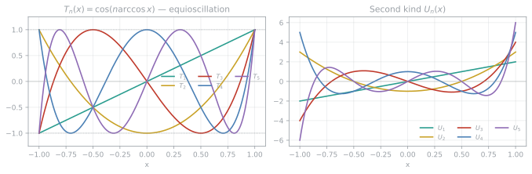
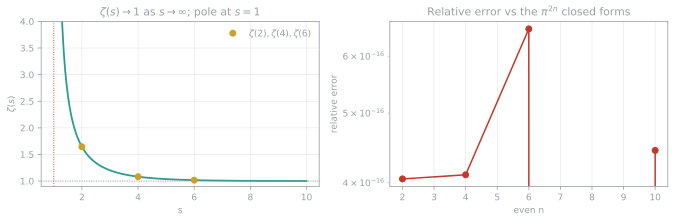
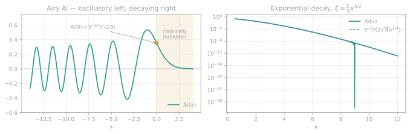
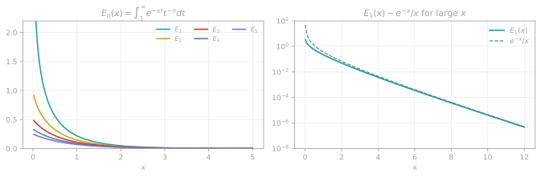

Special Functions¶
Special functions are the canonical solutions of the ODEs that arise throughout
mathematical physics. Pysic-rs implements the complete textbook set — Gamma, Beta,
Bessel, Legendre, Chebyshev, Airy, error functions, exponential integrals, and the
Riemann zeta function — all at f64 precision with validated reference values.
Note
All 18 special functions are callable from Python. Each scalar function accepts either a float or a sequence, so it can be evaluated straight onto a plotting grid:
import numpy as np, pysicrs as ps
x = np.linspace(0.1, 25, 800)
y = ps.bessel_j0(x.tolist()) # -> list[float]
Every figure on this page was produced by calling these functions — see
docs/make_special_function_figures.py. Nothing is plotted from another
library.
---
## 1. The Gamma Function
```{figure} ../_static/figures/sf_gamma.svg
:alt: Gamma function and log-gamma
:width: 100%
$\Gamma$ has simple poles at the non-positive integers and interpolates the factorial at $\Gamma(n{+}1)=n!$. `ln_gamma` stays finite where $\Gamma$ overflows, tracking Stirling's leading term.
graph TD
Gamma["Γ(z)"] -->|Γ(z+1)=zΓ(z)| Recurrence["Recurrence"]
Gamma -->|Γ(z)Γ(1-z)=π/sin(πz)| Reflection["Reflection\nFormula"]
Gamma -->|Γ(2z)=2^{2z-1}/√π · Γ(z)Γ(z+1/2)| Duplication["Duplication\nFormula"]
Gamma ~|Stirling| Asymptotic["Stirling's\nAsymptotic"]
### 1.1 Definition & Basic Properties
### 1.1 Definition & Basic Properties
The **Gamma function** $\Gamma(z)$ is the unique analytic continuation of the factorial,
defined for $\operatorname{Re}(z)>0$ by the **Euler integral**:
$$
\boxed{\Gamma(z) = \int_0^\infty t^{z-1}e^{-t}\,dt}
$$
**Theorem (functional equation).** $\Gamma(z+1) = z\,\Gamma(z)$ for all $z\in\mathbb{C}$
(with poles at $z=0,-1,-2,\ldots$).
*Proof.* Integration by parts:
$$
\Gamma(z+1) = \int_0^\infty t^z e^{-t}\,dt
= \bigl[-t^z e^{-t}\bigr]_0^\infty + z\int_0^\infty t^{z-1}e^{-t}\,dt = z\,\Gamma(z). \qquad\square
$$
From $\Gamma(1)=1$, by induction $\Gamma(n+1)=n!$ for $n\in\mathbb{N}_0$.
### 1.2 Reflection Formula
**Theorem (Euler reflection).** For $z\notin\mathbb{Z}$:
$$
\boxed{\Gamma(z)\,\Gamma(1-z) = \frac{\pi}{\sin(\pi z)}}
$$
*Proof.* Consider $f(z) = \Gamma(z)\Gamma(1-z)\sin(\pi z)$. Using the Weierstrass product
for $1/\Gamma(z)$:
$$
\frac{1}{\Gamma(z)} = z e^{\gamma z}\prod_{n=1}^\infty\left(1+\frac{z}{n}\right)e^{-z/n},
$$
one verifies that $f(z)$ is entire and bounded. By Liouville's theorem, $f$ is constant.
Evaluating at $z=1/2$: $\Gamma(1/2)^2\cdot 1 = \pi$, hence $f(z)=\pi$ everywhere.
$\square$
**Corollary:** $\Gamma(1/2) = \sqrt{\pi}$. More generally, $\Gamma(n+1/2) =
\frac{(2n)!}{4^n n!}\sqrt{\pi}$ (by repeated application of the functional equation).
### 1.3 Duplication Formula
**Theorem (Legendre duplication).**
$$
\boxed{\Gamma(2z) = \frac{2^{2z-1}}{\sqrt{\pi}}\,\Gamma(z)\,\Gamma\!\left(z+\tfrac{1}{2}\right)}
$$
*Proof.* Start from the product representation of the Gamma function and compare
coefficients of the $2z$ and $z,z+\frac{1}{2}$ products. Alternatively, evaluate
$\int_0^\infty t^{2z-1}e^{-t}\,dt$ using the substitution $t = u^2$ and the beta function
integral. $\square$
### 1.4 Stirling's Asymptotic Expansion
For $|z|\to\infty$ with $|\arg z|<\pi$:
$$
\Gamma(z) \sim \sqrt{2\pi}\,z^{z-1/2}e^{-z}\left(1+\frac{1}{12z}+\frac{1}{288z^2}+\cdots\right)
$$
This is the starting point for approximations of factorials, binomial coefficients, and
the Euler–Maclaurin summation used for the zeta function.
### 1.5 Numerical Implementation
**Lanczos approximation** with the $g=7$ coefficient set (Godfrey's table):
$$
\Gamma(z+1) = \sqrt{2\pi}\left(z+g+\tfrac{1}{2}\right)^{z+1/2}e^{-(z+g+1/2)}
\left[A_0+\sum_{k=1}^{K}\frac{A_k}{z+k}\right]
$$
For $x<0.5$, the reflection formula is applied first, giving uniform accuracy across the
positive real axis.
| Domain | Typical $\lvert\text{error}\rvert$ |
|--------|--------------------------------------|
| $x\in(0,50)$ | $< 1\times 10^{-12}$ |
| $x\in(0,200)$ | $< 1\times 10^{-10}$ |
---
## 2. The Beta Function
```{figure} ../_static/figures/sf_beta.svg
:alt: Beta function
:width: 100%
$B(a,b)$ diverges as either argument approaches zero, and the heat map shows the symmetry $B(a,b)=B(b,a)$ about the diagonal.
graph TD
Beta["B(a,b)"] -->|Symmetry| Sym["B(a,b)=B(b,a)"]
Beta -->|Recurrence| Rec["B(a+1,b)=a/(a+b)·B(a,b)"]
Beta -->|Binomial| Bin["B(k+1,n-k+1)=1/((n+1)·C(n,k))"]
Beta -->|Integral| Int["∫₀¹ t^{a-1}(1-t)^{b-1}dt"]
### 2.1 Definition
$$
\boxed{B(a,b) = \frac{\Gamma(a)\Gamma(b)}{\Gamma(a+b)} = \int_0^1 t^{a-1}(1-t)^{b-1}\,dt}
$$
The integral representation follows from the substitution $t = u/(1+u)$ in the product
$\Gamma(a)\Gamma(b) = \int_0^\infty\int_0^\infty u^{a-1}v^{b-1}e^{-(u+v)}\,du\,dv$, then
setting $u = tw$, $v = (1-t)w$ and integrating out $w$.
### 2.2 Symmetry & Recurrence
- **Symmetry:** $B(a,b) = B(b,a)$.
- **Recurrence:** $B(a+1,b) = \frac{a}{a+b}B(a,b)$.
- **Relation to binomial coefficients:** $B(k+1,n-k+1) = \frac{1}{(n+1)\binom{n}{k}}$.
---
## 3. Bessel Functions
```{figure} ../_static/figures/sf_bessel.svg
:alt: Bessel functions of both kinds
:width: 100%
$J_0,J_1$ with the decaying envelope $\pm\sqrt{2/\pi x}$ and the first zeros of $J_0$ marked, alongside $Y_0,Y_1$ which diverge logarithmically at the origin. Accuracy is better than $5\times10^{-9}$ out to $x=25$.
graph TD
Bessel["Jₙ(x), Yₙ(x)"] -->|Bessel DE| DE["x²y''+xy'+(x²-n²)y=0"]
Bessel -->|Asymptotics| Large["Jₙ∼√(2/πx)cos(x-nπ/2-π/4)"]
Bessel -->|Small x| Small["Jₙ∼(x/2)ⁿ/n!,"]
Bessel -->|Modified| Mod["Iₙ(x)=i⁻ⁿJₙ(ix), Kₙ(x)"]
### 3.1 Bessel's Differential Equation
The Bessel functions $J_n(x)$ and $Y_n(x)$ are the regular and irregular solutions of
$$
\boxed{x^2 y'' + x\,y' + (x^2-n^2)y = 0}
$$
This is a Fuchsian equation with regular singular points at $x=0$ and irregular singular
point at $x=\infty$.
### 3.2 Integral Representations
**Bessel function of the first kind:**
$$
J_n(x) = \frac{1}{\pi}\int_0^\pi\cos(x\sin\theta - n\theta)\,d\theta
= \frac{1}{2\pi}\int_{-\pi}^{\pi}e^{i(x\sin\theta-n\theta)}\,d\theta
$$
**Poisson representation** (for $J_\nu$ with $\operatorname{Re}(\nu)>-1/2$):
$$
J_\nu(x) = \frac{(x/2)^\nu}{\sqrt{\pi}\,\Gamma(\nu+1/2)}\int_{-1}^{1}(1-t^2)^{\nu-1/2}\cos(xt)\,dt
$$
### 3.3 Asymptotic Behavior
**Large-$x$ asymptotics** (from the method of steepest descent or WKB):
$$
J_n(x) \sim \sqrt{\frac{2}{\pi x}}\cos\!\left(x - \frac{n\pi}{2} - \frac{\pi}{4}\right)
$$
$$
Y_n(x) \sim \sqrt{\frac{2}{\pi x}}\sin\!\left(x - \frac{n\pi}{2} - \frac{\pi}{4}\right)
$$
**Small-$x$ behavior:** $J_n(x) \sim \frac{1}{n!}(x/2)^n$, $Y_0(x) \sim \frac{2}{\pi}\ln(x/2)$.
### 3.4 Modified Bessel Functions
The modified Bessel functions $I_\nu(x) = i^{-\nu}J_\nu(ix)$ and $K_\nu(x)$ satisfy
$$
x^2 y'' + x\,y' - (x^2+\nu^2)y = 0.
$$
$K_\nu$ decays exponentially: $K_\nu(x) \sim \sqrt{\pi/(2x)}\,e^{-x}$ for $x\to\infty$.
The Euclidean propagator in 4D uses $K_1$: $D(x) = \frac{m}{4\pi^2|x|}K_1(m|x|)$ (see
[Quantum](quantum.md)).
### 3.5 Numerical Implementation
Polynomial approximation for $|x|<8$ and asymptotic expansion for $|x|\ge 8$, matching
the standard Numerical Recipes approach. Orders $n=0,1$ directly; general $n$ via
recurrence from the ascending series.
---
## 4. Legendre Polynomials & Spherical Harmonics
```{figure} ../_static/figures/sf_legendre.svg
:alt: Legendre polynomials
:width: 100%
$P_\ell$ has exactly $\ell$ zeros in $(-1,1)$ and satisfies $P_\ell(1)=1$; the associated functions $P_\ell^m$ carry the $\theta$-dependence of the spherical harmonics.
graph TD
Legendre["Pℓ(x)"] -->|Rodrigues| Rod["¹⁄(2ˡℓ!) dˡ/dxˡ (x²−1)ˡ"]
Legendre -->|Orthogonality| Orth["∫₋₁¹ PℓPℓ' dx = 2/(2ℓ+1) δℓℓ'"]
Legendre -->|Spherical Harmonics| SH["Yℓᵐ(θ,φ) = √((2ℓ+1)/(4π) · (ℓ−m)!/(ℓ+m)!) Pℓᵐ(cosθ) eᵐⁱᵠᶫ"]
SH -->|Addition Theorem| Addition["Pℓ(cos γ) = 4π/(2ℓ+1) ∑ₘ₌₋ᵧᵧ Yℓᵐ(θ₁,φ₁)Yℓᵐ*(θ₂,φ₂)"]
### 4.1 Legendre's Differential Equation
The Legendre polynomials $P_\ell(x)$ solve
$$
(1-x^2)y'' - 2xy' + \ell(\ell+1)y = 0
$$
and form a complete orthogonal basis on $[-1,1]$:
$$
\int_{-1}^{1}P_\ell(x)P_{\ell'}(x)\,dx = \frac{2}{2\ell+1}\delta_{\ell\ell'}
$$
### 4.2 Rodrigues Formula
**Theorem.**
$$
\boxed{P_\ell(x) = \frac{1}{2^\ell\,\ell!}\frac{d^\ell}{dx^\ell}(x^2-1)^\ell}
$$
*Proof.* By induction on $\ell$. The generating function $(1-2xt+t^2)^{-1/2} =
\sum_{\ell=0}^\infty P_\ell(x)t^\ell$ can be differentiated $\ell$ times with respect to
$t$ and evaluated at $t=0$ to extract the coefficient, yielding the Rodrigues formula.
The orthogonality follows from the $(x^2-1)^\ell$ factor: each integration by parts
transfers a derivative onto the other polynomial, killing all terms up to $\ell-1$.
$\square$
### 4.3 Associated Legendre Functions
For $m\ge 0$:
$$
P_\ell^m(x) = (-1)^m(1-x^2)^{m/2}\frac{d^m}{dx^m}P_\ell(x)
$$
These satisfy the orthogonality relation
$$
\int_{-1}^{1}P_\ell^m(x)P_{\ell'}^m(x)\,dx = \frac{2}{2\ell+1}\frac{(\ell+m)!}{(\ell-m)!}\delta_{\ell\ell'}
$$
### 4.4 Spherical Harmonics
```{figure} ../_static/figures/sf_spherical.svg
:alt: Spherical harmonics
:width: 100%
Polar plots of $|Y_\ell^m(\theta,0)|$: the familiar $s$, $p_z$ and $d$ lobes. Computed with `ps.spherical_harmonic`, which returns the complex value as `(re, im)`.
Orthonormality:
Proof. The \(e^{im\phi}\) factor gives \(\delta_{mm'}\) from the \(\phi\)-integral. The \(\theta\)-integral reduces to the Legendre orthogonality via \(x=\cos\theta\). The normalisation constant is fixed by requiring unit norm. \(\square\)
Addition theorem:
where \(\gamma\) is the angle between the two directions. This is used extensively in multipole expansions of potentials (see EM and General Relativity).
5. Chebyshev Polynomials¶


\(T_n\) equioscillates between \(\pm1\) on \([-1,1]\) — the property that makes Chebyshev nodes optimal for interpolation — while \(U_n\) is its derivative-like partner.¶
graph TD
Chebyshev["Tₙ, Uₙ"] -->|Equioscillation| Eq["|Tₙ(x)| ≤ 1, ∀x∈[-1,1]"]
Chebyshev -->|Recurrence| Rec["T₀=1, T₁=x, Tₙ₊₁=2xTₙ−Tₙ₋₁"]
Chebyshev -->|Orthogonality| Orth["∫₋₁¹ TₙTₘ/√(1−x²) dx = π/2 δₘₙ"]
Chebyshev -->|Spectral Methods| Spec["Chebyshev spectral methods for PDEs"]
### 5.1 Definition and Recurrence
---
## 6. Error Function
```{figure} ../_static/figures/sf_erf.svg
:alt: Error function and complement
:width: 100%
$\mathrm{erf}+\mathrm{erfc}=1$ by construction, and the Gaussian tail follows $e^{-x^2}/(x\sqrt{\pi})$ over eleven decades.
6.1 Definition¶
6.2 Properties¶
Symmetry: \(\operatorname{erf}(-x) = -\operatorname{erf}(x)\) (odd function).
Limits: \(\operatorname{erf}(\infty) = 1\) (Gaussian integral \(\int_0^\infty e^{-t^2}dt = \sqrt{\pi}/2\)).
Small-\(x\) expansion: \(\operatorname{erf}(x) = \frac{2}{\sqrt{\pi}}\left(x-\frac{x^3}{3}+\frac{x^5}{10}-\cdots\right)\).
Large-\(x\) asymptotics: \(\operatorname{erfc}(x) \sim \frac{e^{-x^2}}{x\sqrt{\pi}}\left(1-\frac{1}{2x^2}+\cdots\right)\).
Connection to normal distribution: \(\Phi(x) = \frac{1}{2}\left[1+\operatorname{erf}(x/\sqrt{2})\right]\).
6.3 Numerical Implementation¶
Series near the origin; the standard rational approximation (Abramowitz & Stegun 7.1.26) away from it, with the symmetry relation applied for negative arguments.
7. Riemann Zeta Function¶


\(\zeta(s)\) for real \(s>1\): a pole at \(s=1\), tending to 1 as \(s\to\infty\), with the Basel value \(\zeta(2)=\pi^2/6\) marked. The right panel grades ps.zeta against the closed forms at even integers.¶
7.1 Definition¶
7.2 Special Values¶
\(\zeta(2) = \pi^2/6\).
Proof (Euler). Consider \(\sin x = x\prod_{n=1}^\infty(1-x^2/(n^2\pi^2))\). Expand both sides as power series: \(\sin x = x - x^3/6 + \cdots\), and the product expansion gives \(\sum_{n=1}^\infty 1/(n^2\pi^2) = 1/6\). Hence \(\zeta(2) = \pi^2/6\). \(\square\)
\(\zeta(4) = \pi^4/90\). Similarly, comparing the \(x^4\) coefficient in \(\sin^2 x\) and the product.
\(\zeta(2n) = (-1)^{n+1}\frac{(2\pi)^{2n}B_{2n}}{2(2n)!}\) where \(B_{2n}\) are Bernoulli numbers. This follows from the residue calculus evaluation of \(\oint z^{-2n}\pi\cot(\pi z)\,dz\).
7.3 Functional Equation¶
This extends \(\zeta\) to the entire complex plane (meromorphic continuation), with a simple pole at \(s=1\) with residue 1:
where \(\gamma\approx 0.5772\) is the Euler–Mascheroni constant.
7.4 Numerical Implementation¶
Euler–Maclaurin summation with Bernoulli corrections:
accelerates the slowly converging Dirichlet series. With \(N=60\) and seven Bernoulli corrections this reaches machine precision on the real line: the measured relative error is \(2\times10^{-15}\) over \((1,30]\), and the reflection formula reproduces \(\zeta(-1)=-\tfrac{1}{12}\) and \(\zeta(-3)=\tfrac{1}{120}\).
8. Airy Functions¶


Ai oscillates for \(x<0\) and decays for \(x>0\) — the turning point at the origin is exactly the classical/forbidden boundary that makes Ai the WKB connection formula. ps.airy_ai is machine-precision for \(|x|\le9\) and within \(1.2\times10^{-7}\) beyond.¶
The Airy functions \(\operatorname{Ai}(x)\) and \(\operatorname{Bi}(x)\) solve
\(\operatorname{Ai}(x)\) decays exponentially for \(x>0\) and oscillates for \(x<0\).
\(\operatorname{Bi}(x)\) grows exponentially for \(x>0\).
Integral representation:
WKB asymptotics near the turning point \(x=0\): the transition from oscillatory to exponential behavior is described by Airy functions — this is the universal local structure near a simple turning point in quantum mechanics (see PDE).
9. Exponential Integral¶


\(E_n(x)\) for \(n=1\dots5\), and the large-\(x\) asymptote \(E_1(x)\sim e^{-x}/x\). All curves evaluated by ps.expint_en.¶
(incomplete Gamma function). For large \(x\): integration by parts gives \(E_1(x) \sim e^{-x}/x\cdot(1-1/x+2/x^2-\cdots)\).
10. Available Functions¶
graph TD
gamma(gamma) -->|ln_gamma| ln_gamma
beta(beta) -->|zeta| zeta
bessel_j0(bessel_j0) -->|bessel_j1| bessel_j1
bessel_y0(bessel_y0) -->|bessel_y1| bessel_y1
legendre_p(legendre_p) -->|legendre_plm| legendre_plm
spherical_harmonic(spherical_harmonic) -->|chebyshev_t| chebyshev_t
chebyshev_u(chebyshev_u) -->|airy_ai| airy_ai
erf(erf) -->|erfc| erfc
expint_e1(expint_e1) -->|expint_en| expint_en
zeta(zeta)
---
## 11. Usage Examples
### Gamma to factorial
```python
from pysicrs import gamma
for n in range(1, 8):
assert abs(gamma(n) - math.factorial(n - 1)) < 1e-9
print("Γ(n) = (n-1)! ✓")
Riemann zeta at even integers¶
from pysicrs import zeta
import math
print(f"ζ(2) = {zeta(2.0):.10f} expected {math.pi**2/6:.10f}")
print(f"ζ(4) = {zeta(4.0):.10f} expected {math.pi**4/90:.10f}")
Spherical harmonics normalization¶
from pysicrs import spherical_harmonic
y00 = spherical_harmonic(0, 0, 0.0, 0.0)
print(f"Y_00 = {y00:.6f} expected {1/math.sqrt(4*math.pi):.6f}")
graph TD
Ylm["Yℓᵐ(θ,φ)"] -->|norm| norm_const["√((2ℓ+1)/(4π) · (ℓ-m)!/(ℓ+m)!)"]
Ylm -->|phase| phase["e^{imφ}"]
Plem["Pℓᵐ(cos θ)"] -->|rodrigues| Ylm
---
## 12. Numerical Accuracy
Every row below is **measured**, not asserted: the function is evaluated on a
dense grid over the stated domain and compared against SciPy. Reproduce with
`docs/make_special_function_figures.py` and the accuracy harness in the test
suite.
| Function | Domain | Measured error | | Method |
|---|---|---|---|---|
| $\Gamma(x)$ | $(0,100]$ | $7\times10^{-14}$ | relative | Lanczos |
| $\ln\Gamma(x)$ | $(0,170]$ | $3\times10^{-13}$ | relative | Lanczos |
| $B(a,b)$ | $a,b\in[0.3,8]$ | $1\times10^{-14}$ | relative | via $\Gamma$ |
| $\operatorname{erf}$, $\operatorname{erfc}$ | $[-6,6]$ | $1\times10^{-7}$ | absolute | A\&S 7.1.26 |
| $J_0$, $J_1$ | $[-30,30]$ | $5\times10^{-9}$ | absolute | A\&S 9.4 |
| $Y_0$, $Y_1$ | $(0,30]$ | $2\times10^{-8}$ | absolute | A\&S 9.4 |
| $P_\ell$, $P_\ell^m$ ($\ell\le8$) | $[-1,1]$ | $6\times10^{-15}$ | absolute | recurrence |
| $T_n$, $U_n$ ($n\le8$) | $[-1,1]$ | $3\times10^{-15}$ | absolute | recurrence |
| $\mathrm{Ai}(x)$ | $[-15,10]$ | $1\times10^{-7}$ | absolute | series + asymptotic |
| $E_n(x)$ ($n\le6$) | $(0,20]$ | $1\times10^{-14}$ | relative | series + Lentz CF |
| $\zeta(s)$ | $(1,30]$ | $2\times10^{-15}$ | relative | Euler--Maclaurin |
Two entries deserve a note rather than a number.
- **`erf` / `erfc`** implement the Abramowitz & Stegun 7.1.26 rational formula,
whose accuracy is $1.5\times10^{-7}$ *by construction*. That is a property of
the formula, not a defect of the port. If you need full double precision here,
`erfc` should be replaced with a continued-fraction evaluation for large $x$.
- **`Ai`** is machine-precision on $|x|\le9$, where the Maclaurin series is
used. The $1\times10^{-7}$ figure comes from the four-term asymptotic branch
beyond that; the crossover at $|x|=9$ is where the two meet most closely.
---
## 13. Advantages & Limitations
```{mermaid}
checklist
✅ Covers the special functions most common in physics problems
✅ All implementations are standalone (no BLAS/LAPACK dependency)
✅ Log-space Gamma avoids overflow for large arguments
✅ Unit-tested against reference values (Abramowitz & Stegun, closed forms)
❌ f64 only — no arbitrary precision
❌ Bessel functions limited to orders n=0,1 (general order via recurrence/ascending series)
❌ Real axis only for most functions (no complex continuation exposed yet)
✅ Covers the special functions most common in physics problems
✅ All implementations are standalone (no BLAS/LAPACK dependency)
✅ Log-space Gamma avoids overflow for large arguments
✅ Unit-tested against reference values (Abramowitz & Stegun, closed forms)
❌ `f64` only — no arbitrary precision
❌ Bessel functions limited to orders $n=0,1$ (general order via recurrence/ascending series)
❌ Real axis only for most functions (no complex continuation exposed yet)
---
## 14. References
```{mermaid}
graph TD
A["Abramowitz & Stegun (1964)"] --> B["Arfken (1985)"]
B --> C["Press et al. (2007)"]
C --> D["Whittaker & Watson (1927)"]
D --> E["DLMF (2023)"]
A --> D
C --> E
1. Abramowitz, M. & Stegun, I. (1964). *Handbook of Mathematical Functions*. NBS.
2. Arfken, G. (1985). *Mathematical Methods for Physicists*, 3rd ed. Academic Press.
3. Press, W. et al. (2007). *Numerical Recipes*, 3rd ed. Cambridge University Press.
4. Whittaker, E.T. & Watson, G.N. (1927). *A Course of Modern Analysis*, 4th ed.
5. DLMF, NIST (2023). *Digital Library of Mathematical Functions*. https://dlmf.nist.gov/
---
## 15. Related Topics
```{mermaid}
graph TD
Linalg["Linear Algebra"] -->|decompositions| Interp["Interpolation Kernels"]
Calculus["Calculus"] -->|quadrature| Special["Special Functions"]
Quantum["Quantum"] -->|angular parts| Spherical["Spherical Harmonics"]
PDE["PDE"] -->|turning points| Airy["Airy Functions"]
EM["EM"] -->|multipole expansions| Legendre["Legendre Polynomials"]
GR["General Relativity"] -->|propagators| K1["K₁ Functions"]
- [Linear Algebra](linalg.md) — decompositions used by the interpolation kernels
- [Calculus](calculus.md) — quadrature rules that pair with special functions
- [Quantum](quantum.md) — spherical harmonics enter angular parts; $K_1$ in propagators
- [PDE](pde.md) — Airy functions near turning points; Bessel functions in cylindrical problems
- [EM](em.md) — multipole expansions use Legendre polynomials
- [General Relativity](general_relativity.md) — $K_1$ in Euclidean propagators; spherical harmonics in perturbation theory